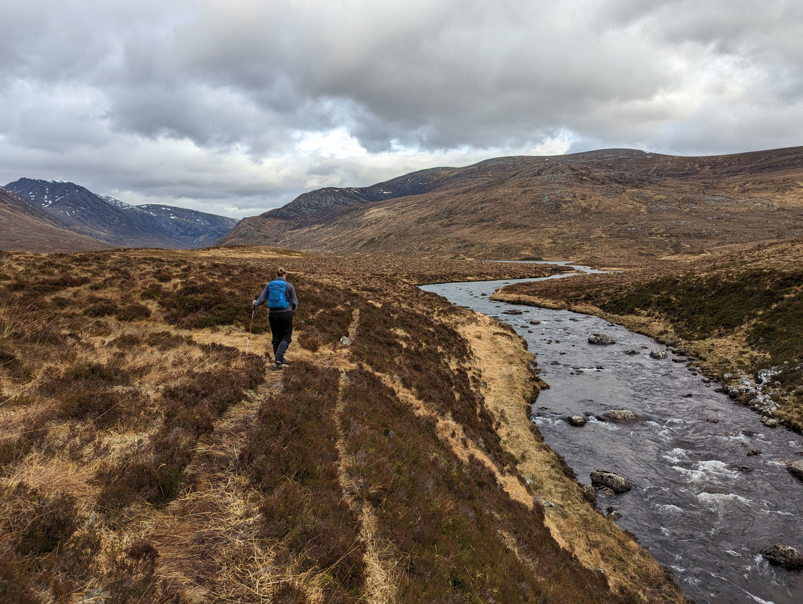
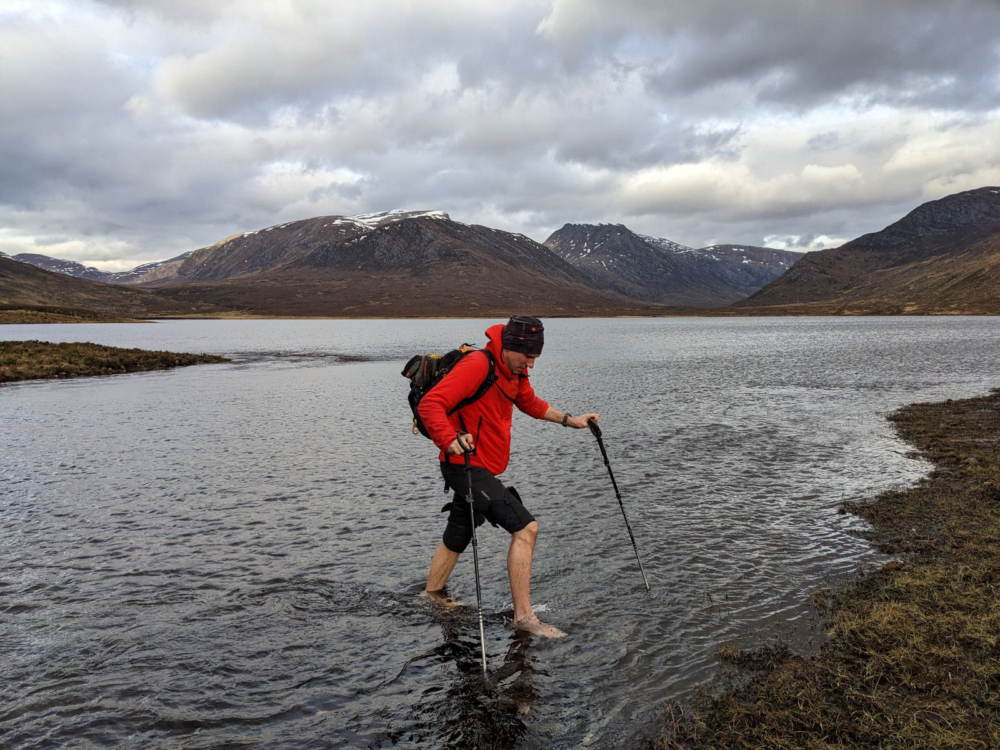
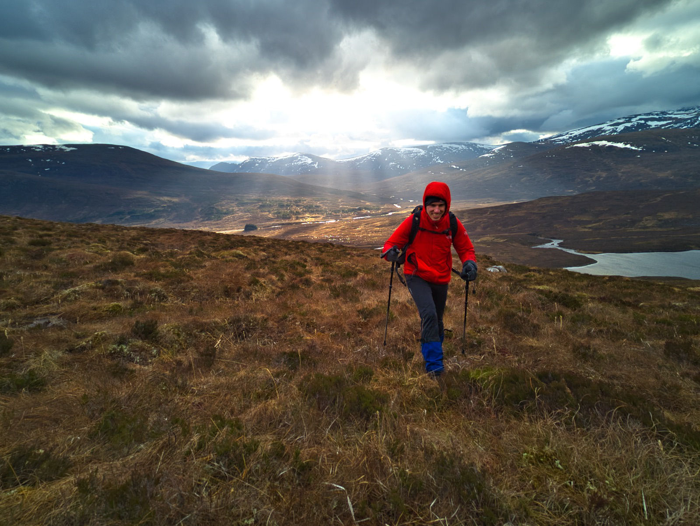
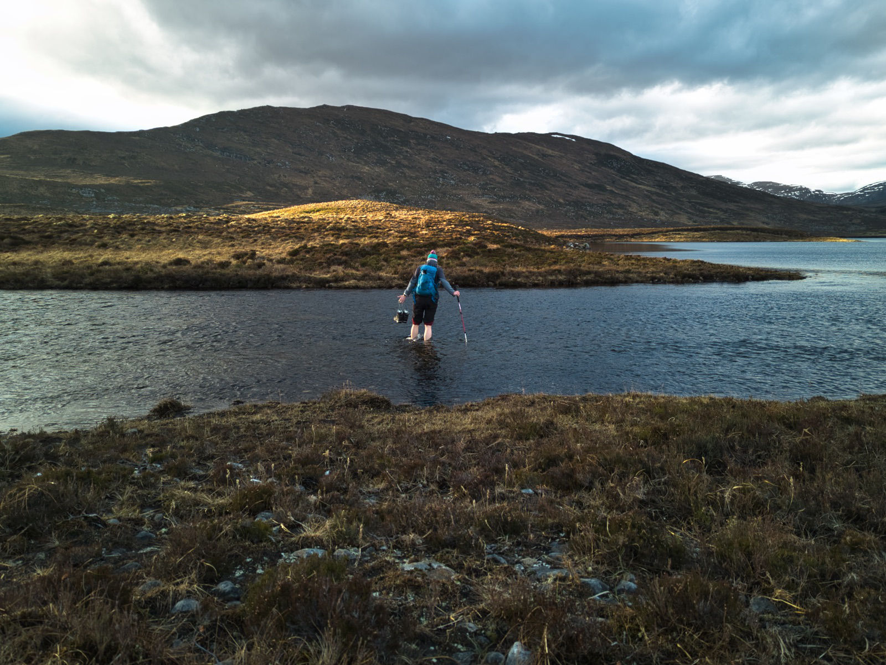
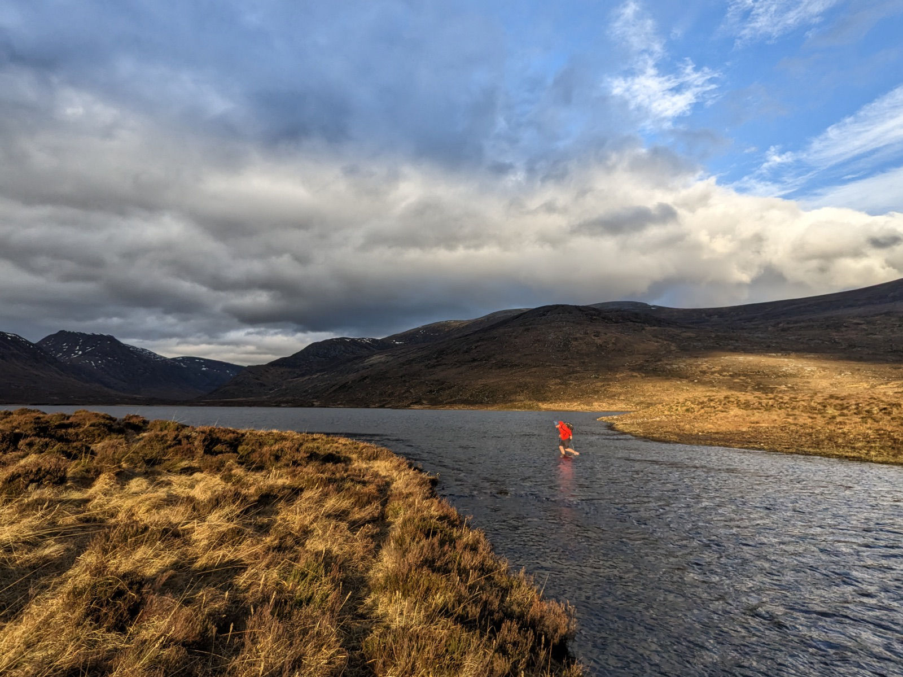
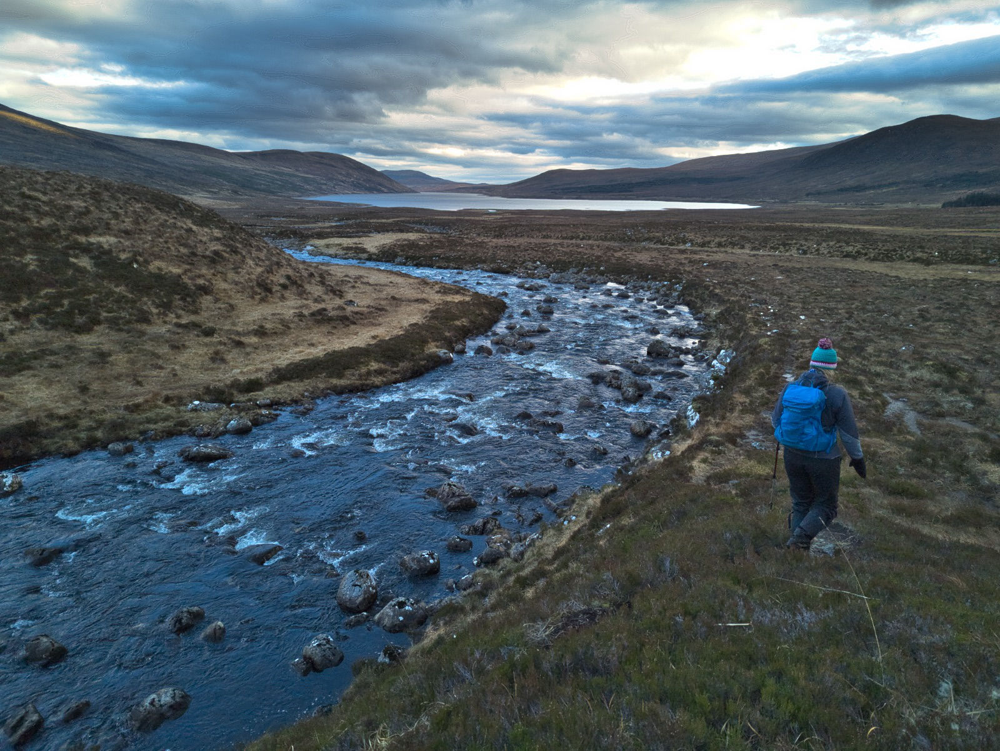

Time for another adventure.... Trying to pronounce where we were going. It often feels like when trying to pronounce Gaelic words, only about half of the letters in a word are really spoken out loud. The question is, which ones? Is it Am Foch? Am Faogch? Am Fagach? Am Fachagach? Anyways, off we went. Not too much winter about at this time. Hopefully we will get a good few buckets of snow soon, the winter is a bit sparse at the minute.

We had to cross a river to go through out hike. Luckily not too deep. But here we realized it really is winter. The water was freeeezing cold!

As always, beautiful vistas once you get up high. It still seems amazing to me that you can just walk up to about a km in hight. Difficult to wrap your head around. Suddenly the sun poked some beams through the clouds. It looks like Leigh is ducking away from the light!

Up to the light! We knew this was coming, we had to cross the river again on the way back. Brrrr...


We followed the river downstream, until we could pick up a trail that would bring us back to our car. Wonderful vistas also here at lower levels. The lake in the distance is a dammed lake, and we haven't seen the water levels this high since we arrived in Scotland.
